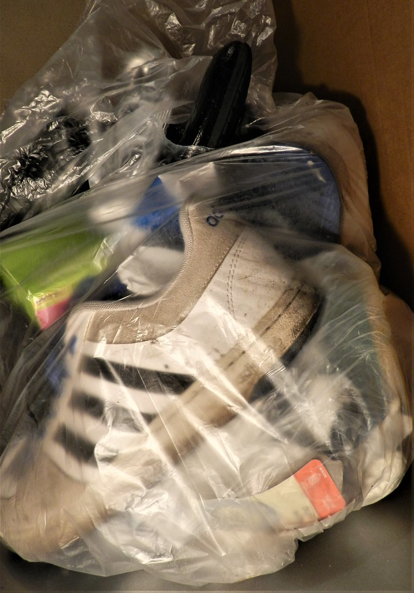
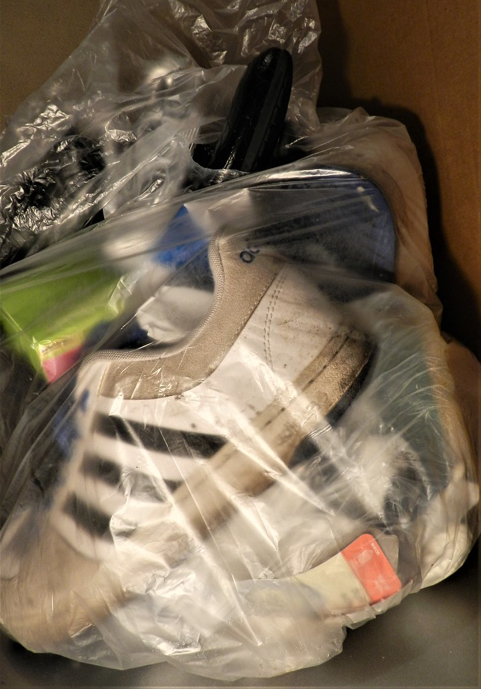

Gallery


If you’re looking to breathe new life into your shoes, look no further! Our shoe services offer essentials ranging from basic shoe cleaning to a full-blown customization using sustainable and upcycled materials.
Shop NowFirst Step (stylized as 1step) is an eco-conscious footwear shop that offers customization and restoration services. Our customization services will modify shoes based on a client’s tailored requests, giving personality and a unique twist to one’s style.
Ragged shoes can be repaired and shoe collectors or hoarders can offer the shoes that they usually don’t wear anymore, for us to restore, customize, and sell to those who would want them, using sustainable and recycled materials. In this way, we can reduce the amount of wasted shoes that will only be landfilled and pollute municipalities, especially those that were only thrown out because it was out of style, not fashionably trendy anymore, or even just from preference. First Step is practical, while also being in style with the current trends and media preferences.
First Step strives to provide the opportunity in taking the first step towards self-expression, creativity, and eco-consciousness through our own personalized and eco-ethical shoe designs. We are committed to create an optimistic future through an eco-ethical lifestyle where quality, style, and sustainability can coexist.
To become one of the leading companies to bring eco-friendly footwear alternatives while promoting style and creativity.
